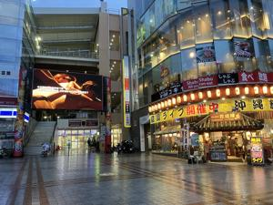

うるがいの話 ある日
最新: 大学同期【うるがいの話 ある日】とは 一日だけのプログです
『うるがいの話』の最新一日だけのプログで、通信料が少なく経済的だ。カニの画像をクリックすると全ての日付が載る『うるがいの話』サイトを表示します
|
|
【うるがいの話】 うるがい(ｳﾙｶﾞｲ urugai)とは、『もずくがに』の名前でとても大きくなります。 |
|---|---|
|
|
【カミマヤーの話】 猫のことを方言でマヤーといいます。カミマヤー（kamimayaa）とは、神の猫のことです。 |
|
【たながぁの音楽】 たながぁ（ﾀﾅｶﾞｰ tanagaa）とは手長えびのことで、何種類かあり大きいのは車 エビぐらいになります。 |

|
【ぶながぁの話】 ぶながぁ(ﾌﾞﾅｶﾞｰ bunagaa)とは、赤い髪の毛、赤い身体、そして身長は１ｍ２０ｃｍ ぐらい、川の蟹を食べているの目撃された。場所は沖縄県国頭郡大宜味村のと ある村僕の隣近所に住んでいる爺さんから、聞いた話です。 |
|
|
【ギーマの話】 ギーマ(giima)とは、山原の里山に咲くスズランに似た、 花を付けます。実は食べられます、 気が付くと口の周りが紫になっています。 |
2024年09月29日 (日）大学同期
17:07
小雨が降る中、傘をさして久茂地川沿いの飲み屋に、集合時間の数分前に
入る。オオシで予約してます、『あ、こちらです』と案内される。白髪の
オジー二人が、座っていた。へぇー、すっかり老人になって、でも人には
言えないと久しぶりと挨拶をする（私の前回の参加は７年前の２０１７年
９月２３日（金）、幹事に訪ねても分からないというのでプログから調べ
た）。幹事のオオシは、１０分後遅れで到着。ん、想定通り白髪だ、髪の
量が少ない。

ところで、私、耳が遠いので配慮をと話すと２名は現役の時から、補聴器
を利用しているとのこと。ホー、大学の実験などの環境が悪かったかも。
集まった４名は、全員年金を頂いている。私より、一年ほど年上のナガさ
んは６５才まで働き、さらに７０才まで日勤６時間であまり楽しくない仕
事をしているとか。工業高校卒（英語が苦手と教養課程で苦労していた）
アサは、仕事を退職して半年だとか６５才になるまで（年金の受給金額が
有利になるとか）あと数か月休んでハローワークで求職活動をするとか。
幹事のオオシは、サラリーマンはもうイヤだと、コロナ前に民泊を営んで
いた。コロナ時は全然お客さんはいなかったが、今は海外や修学旅行生を
最大５名まで宿泊して、順調だと。ホー、私は２月にとある会社に入りと
んでもない経験をして、４月３週目で退職したぜと経過報告。いまは、ユ
ーチューブ動画など作っています。ドレドレと視聴回数が多い『ベンチャ
ーズ パイプライン』を自分のスマホで、音楽を流すが・・・、まったく
音が聞こえない！！！、飲み屋がうるさいのとそもそも難聴の人達、あと
で教えてと中断。オオシは、三線同好会も作り、老人ホームで演奏してい
るとのこと、一緒にと誘われたが。彼はギターでフォークを演奏するのが
夢らしいが、無理と諦めていると。ホー、私はギターダコができているよ
と左手の指のタコを触ってもらう。
世界救世教（せかいきゅうせいきょう）にハマってしまった８８歳のバー
さん、仏壇（トートーメー）も捨ててしまった。退団させたいが、ガンコ
で困っている。
老夫婦のバーさんが、転んで足を骨折、オジーの世話をするヘルパーを雇
おうとするが、オジーが受け付けず、ヨメが世話で苦労している。この状
態ではマズイと。 フムフム、なるほど介護で苦労している。
解散する前に、ラインのフループ登録を老人たちはスマホを操作するのだ
が、ダサい！、１０以上ゴチャゴチャ工学部卒とは思えない。そして２１
時、来年ネと解散する。先ほど、ラインのグループに私のユーチューブ動
画を紹介した。ビールジョッキ５杯、品数沢山、美味しくて２時間半、会
費５千円。
１６時５９分 ビットコインの総資産 ￥２７、００８（↓２０６）